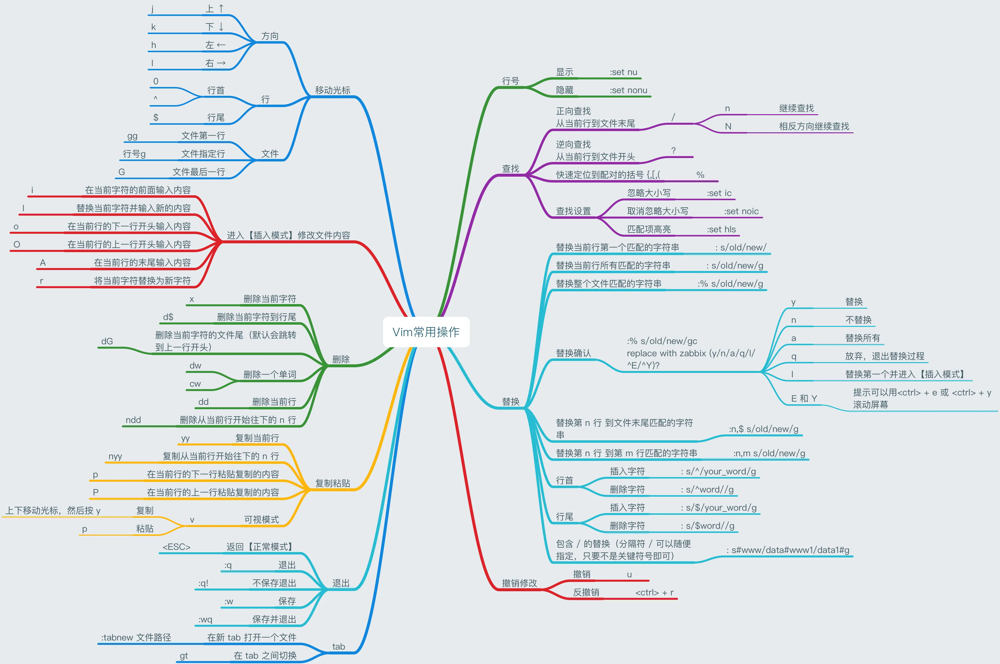

Vim
伟人
Bram Moolenaar （1961—2023.8.3），编辑器之神Vim之父
1961年——出生在荷兰莱斯镇 1985年——代尔夫特理工大学毕业，获得电气工程学士学位 1988年——开发Vim
简介
- Vim开源、免费的文本编辑器
- Vim初始是根据Vi来编写的
- 初始版本为“Vi IMitation”，1992年，在版本1.22中改名为“Vi IMproved”
优点
- persistent, multi-level undo tree 持久的、多层次的undo树
- extensive plugin system 广泛的插件系统
- support for hundreds of programming languages and file formats 支持数百种编程语言和文件格式
- powerful search and replace 强大的搜索和替换能力
- integrates with many tools 集成了许多工具
Vim官方网站vim.org
善举
ICCF（International Child Care Fund）国际儿童保育基金，是一个慈善组织。Bram Moolenaar还通过Vim项目鼓励开发者对乌干达的艾滋孤儿捐赠。将网站的收入和赞助全部捐赠给这个组织，帮助乌干达的孤儿。
结构
命令模式
- 进入vim时，就是命令模式
- 可以移动光标
- 可以删除、复制、粘贴文本
- 可以撤销、反撤销
输入模式
- 在
命令模式下按i或者a或者o即可进入该模式 - 在该模式中就可以输入文本了
- 按
Esc就可以回到命令模式
命令行模式
- 在
命令模式下按:即可进入该模式 - 在模式中，有大量的命令可以输入
- 比如常用的保存
w、退出q
操作
- 全文复制 思路 第一行为gg,最后一行为G,复制为yy，结合起来，在可视令模式下输入 ggyG

配置
- 可以使用Vbundle进行插件配置
- 主要是vimrc文件，可以在~/.vimrc中配置自己想要的配置
- 在github中，有很多vimrc，可以一键安装
R.I.P
Last modified on 2024-05-14